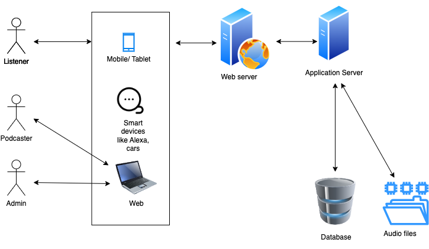
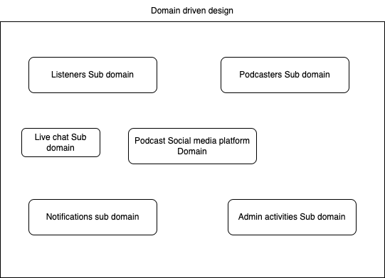
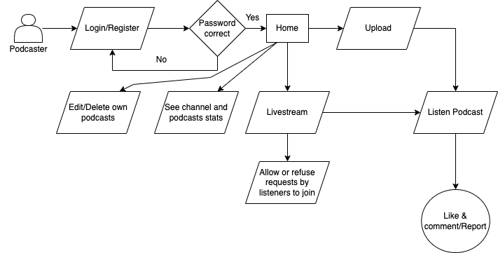
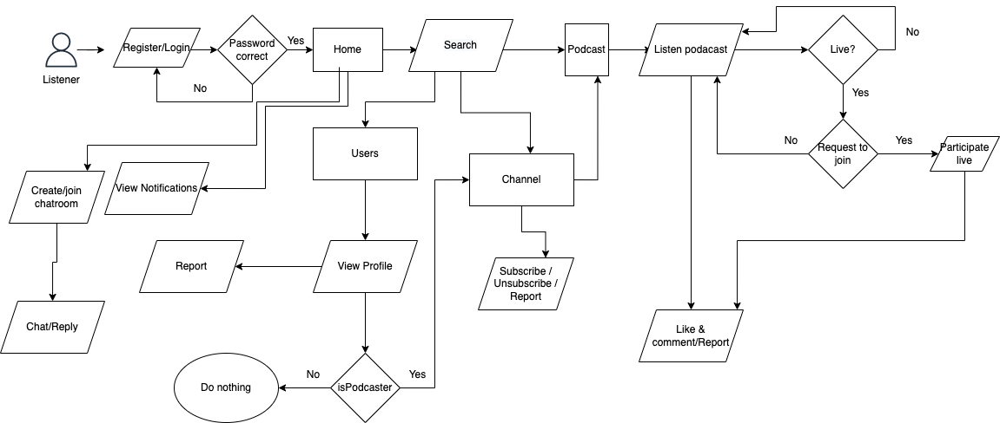
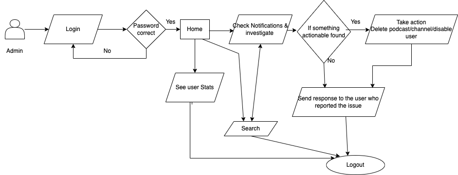
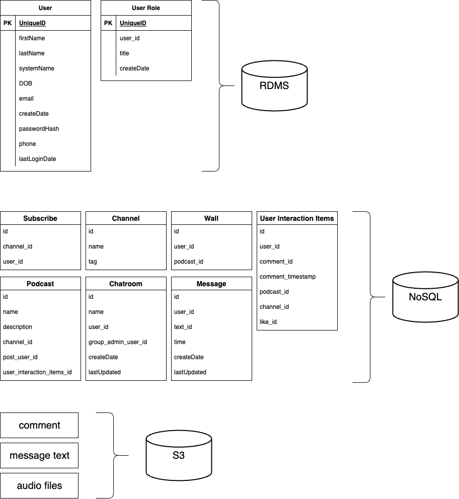
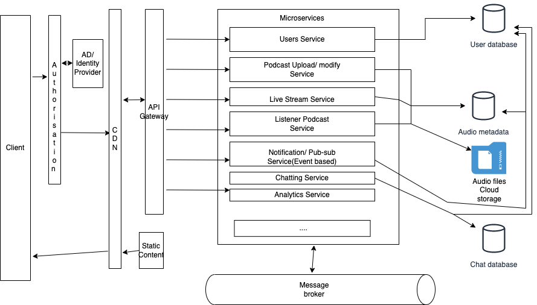

We love podcasts!
Our product, MOUSAI is a podcast hosting provider with live and recorded streaming and different channels as well as listeners can search for the podcast topics of their choice, listen and request to connect to a live podcast to chat and share their thoughts if the host accepts. It is a platform where everyone can podcast on their own channel and subscribe to others. So, we are always looking for an all-in-one platform to make user communication more accessible and engaging. This application is focussed on the user engagement around the podcasts.
Mike is an influencer from Twitch and Tiktok. Right now he wants to find a place to create his own podcast to amplify his voice. That’s why he chose MOUSAI. Mike turned to live streaming to promote his podcasts and tried to attract listeners. People love listening to live content, so now he hosts the podcasts live. For Mike, it’s been a great way to open up his reach. Live streaming represents the democratization of news casting. Mike is impressed with the functions of interacting with his followers. He can get active and updated responses from comments and direct messages so as to make some adjustments. Today, there are millions of live streaming channels you can tune into; We’re no longer limited by traditional channels found on television/radio. If you have a powerful message to deliver, there’s an audience out there for you, and it’s easier than ever before to reach them and engage.
Albert is a busy software engineer who typically spends nearly 2 hours on his commute each weekday. On his way to work, he likes to use the bits and pieces of his commute to learn and explore topics he is passionate about. Also, he loves the interacting with people having the same interests as him since he is so busy with work that he has little chance to chat with others. Albert thinks that a live podcast with chatting function will be a good platform that suits his requirements so he usually listens to podcasts on the subway. Albert follows live channels about constellations, talking about the fortune and analyzing the personality traits of different constellations signs. Albert often shares his personal ideas in the chatting room with the podcaster and other listeners. It makes his commute less boring and also brings entertainment and relaxation to his busy day. Albert loves the platform, which gives him the opportunity to chat and talk on live podcasts in real-time with like-minded people.
| Types of users | Types of platform | User character |
|---|---|---|
| Podcasters | Web |
Background:
|
| Listeners / Subscribers | Web / Mobile / Smart Devices |
Background:
|
| Administrator | Web |
Background:
|
As we consider multiple use cases of this system, it is apparent the scope of the system can easily expand if allowed.
Since this product has a scope to scale up and down both horizontally as well as vertically based on the number of listeners and podcasters, as well as, the number of features that can be added in the future, we feel microservices architecture will best suit the APIs being consumed by user interface consisting of multiple devices. The presentation tier is mainly for the user interface and communication layer of the application, where the end-user interacts with the application. In MOUSAI, our users could get access to the data on three different platforms including web, mobile, and smart device integration such as Alexa apps and smart car apps. Figure 1.1 is the high-level architecture depicting that the users will be able to access the application through three interfaces:
Fig. 1.1 
In Figure 1.2 is the domain design of MOUSAI to be more clear of the modules involved in the product. We have defined the subdomain based on its inner problem space logic and business requirements. The core domain is Podcast Social media platform and all others are the sub-domains including listeners subdomain, podcasters subdomain, live chat subdomain, notification subdomain and admin activities sub domain.
Fig. 1.2 
Below are some flow diagrams for more clarity on the usage of the system by each user role defined:
Fig. 1.3  As seen in the Figure 1.3, after login/signup, the podcaster will land on the home page where he/she will have multiple options to upload and publish a podcast, livestream, see the channel and podcast stats and edit or delete own podcasts, reply to the comments and report the comments/users which all is mentioned in the diagram.
Fig. 1.4  As seen in the Figure 1.4, after login/signup, the listener will land on the home page where he/she will have multiple options including searching for podacsts, channels, listening, subscribing, commenting, reporting, joining a live podcast, creating a chat room, etc.
Fig. 1.5  As seen in the Figure 1.5, after login, the admin will land on the home page where he/she will have multiple options including review the reports, see analytics, searching for podacsts, channels.
Podcast streaming platforms may have a variety of data formats, including text, image, and audio types, among others. Extracting and structuring the information contained in these data is not always useful or efficient. This is where the document storage component comes in. The purpose of the document storage component is to securely and persistently store any files that the user uploads to the system.
Amazon S3 is an ideal choice for file storage components. Amazon S3 offers industry-leading scalability, data availability, security, and performance. It is also affordable, well-supported, mature and easy to configure. Every file uploaded to the system can be dumped to an S3 bucket and associated with an entity in the database component. We can also use S3 to store backups of all data. Data backups can be automated using tools provided by AWS and stored privately in a separate S3 bucket.
Databases are a core component of many software systems, especially web-based systems. There are two popular database types: RDBMS and Nosql, each with their own advantages and challenges. RDBMS is ideal for structured data while NoSQL databases can easily handle any data format, such as structured, semi-structured, and unstructured data in a single data store. Using NoSQL, we can easily identify all the metadata the system needs to capture.
Since MOUSAI is a streaming platform that needs to support large amounts of audio storage space. To maintain this complex and large-scale system, it is better using NoSQL to handle our metadata database. NoSQL models provide several features that we will make heavy use of. There are no relational constraints on the data, and it does not need to be even tabular. NoSQL offers performance at a higher scale by typically giving up strong consistency. But for user-related data including user personal information and role information, RDBMS is a good choice. SQL databases are a better fit for heavy duty or complex transactions because it’s more stable and ensure data integrity.
Below are the charts for our database design. Functional related data is stored in NoSQL and their related files are stored in S3。

For the services, we have chosen to go with microservices architecture as we can see alot of use cases to use microservices.
Figure 4.1 
In the Figure 4.1
TODO
TODO
Here is the Requirement Traceability Matrix providing a quick reference for the relationship between the requirements and the system components. Functional requirements define what a product must do, what its features and functions are. Nonfunctional requirements describe the general properties of a system. An RTM ensures that projects do everything they set out to do. This step-by-step process helps identify the requirements and the products that are required to be tested successfully. It also helps in determining the project's direction and timeline.
| Requirement number | Microservices Architecture | Database Component | File Storage (S3) | Web App Component | Rest API | WebSocket API | Message Broker | Identity Provider | CDN | Pubsub Service (Amazon SNS) | Analytics Service |
| FR1 | X | X | X | X | |||||||
| FR2 | X | X | X | X | |||||||
| FR3 | X | X | X | X | |||||||
| FR4 | X | X | X | X | X | X | |||||
| FR5 | X | X | X | X | X | X | X | ||||
| FR6 | X | X | X | X | X | X | X | ||||
| FR7 | X | X | X | X | X | X | X | ||||
| FR8 | X | X | X | X | X | X | X | X | |||
| FR9 | X | X | X | X | |||||||
| FR10 | X | X | X | X | X | X | X | ||||
| FR11 | X | X | X | X | X | X | X | ||||
| FR12 | X | X | X | X | X | ||||||
| FR13 | X | X | X | X | X | X | |||||
| FR14 | X | X | X | X | X | ||||||
| FR15 | X | X | X | X | X | X | X | ||||
| FR16 | X | X | X | X | X | X | X | ||||
| FR17 | X | X | X | X | X | X | |||||
| FR18 | X | X | X | X | X | X | |||||
| FR19 | X | X | X | X | X | X | X | ||||
| FR20 | X | X | X | X | X | X |
| Requirement number | Microservices Architecture | Database Component | File Storage (S3) | Web App Component | Rest API | WebSocket API | Message Broker | Identity Provider | CDN | Pubsub Service (Amazon SNS) | Analytics Service |
| NFR1 | X | X | X | X | X | X | X | X | X | ||
| NFR2 | X | ||||||||||
| NFR3 | X | X | X | X | X | X | X | ||||
| NFR4 | X | X | X | X | X | X | X | ||||
| NFR5 | X | X | X | ||||||||
| NFR6 | X | ||||||||||
| NFR7 | X | X | |||||||||
| NFR8 | X | X | X | ||||||||
| NFR9 | X | ||||||||||
| NFR10 | X |
In this application, we have several modules to serve each requirement. They are:
An identity provider is a system that creates, stores, and manages digital identities. It can either directly authenticate the user or can provide authentication services to third-party service providers (apps, websites, or other digital services). In our application, we are expecting people to have at least a google email id to log in and use google’s Single Sign-On service to provide authentication to use the application. This allows users to create a profile in MOUSAI.
An API management tool sits between client and backend services. An API gateway acts as a reverse proxy to accept all API calls, aggregate the services required to fulfill them and return the appropriate result. They are used to protect the application from overuse and abuse by providing an extra layer of authentication and rate-limiting services. They also provide us with statistics on how the APIs are used that help us with the future monetization of particular services.
AWS Cloud Front works as the content delivery network(CDN) in our application because we are a large number of users across the world and have less latency for the response. CDN refers to a geographically distributed group of servers that work together to provide fast delivery of data. It allows for the quick transfer of assets needed for loading application content including HTML pages, javascript files, stylesheets, images, and videos. It can also help our application protect from common attacks such as DDOS attacks.
Microservices architecture is very helpful when a few of the services are more critical than other services. When a change is made in one service, we can deploy only one service while keeping alive the rest of the services. This helps us save the downtime of critical services. Scalability is also easy with this architecture being incorporated into the application. That is why we have different services for different requirements like those mentioned below:
A message broker is a software that enables services to communicate with each other and exchange information. This allows interdependent services to “talk” with one another directly, even if they were written in different languages or implemented on different platforms. They are used in our application to delegate a few tasks to other services as sending a notification to a user when the admin makes changes to their issue report, sending notification to the user regarding the user interactions in their podcast.
Using S3 as our file storage gives us everything we want with minimal investment. S3 provides all the tools necessary to properly configure file storage.
Benefits of S3:
Amazon S3 buckets can only be used by the identity that created them. We can set access permissions per file, per bucket, or through IAM (Identity Access Management), which provides complete control over how, where and who can frequently access data. Using these rules and permission sets, we can ensure that there is no unauthorized access to our data.
Amazon S3 gives every user, its service access to the same highly scalable, reliable, fast, inexpensive data storage infrastructure that Amazon uses to run its own global network of websites.
Amazon S3 has a very user-friendly web interface which takes out the usual hard work of maintaining security, optimizing storage classes and managing the data transfer in the most suitable way.
S3 is ideal for a wide range of uses like data storage, data backup, software delivery, data archiving, disaster recovery, website hosting, mobile applications, and much more.
A Relational Database consists of appropriately arranged tables from which data can be administered and operated in various different ways without having to rearrange the entire set of database tables. SQL queries are applied for both interactive queryings to fetch information and gathering data for reporting and analysis purposes. This helps in making important business decision-making processes convenient.
Benefits of RDBMS:
In the relational database system, there can be multiple tables related to one another with the use of a primary key and foreign key concepts. This makes the data to be non-repetitive. There is no chance for duplication of data. Hence, the accuracy of data in the relational database is more than any other database system.
Data integrity is a crucial characteristic of the Relational Database system. Sturdy Data entries and legitimacy validations ensure that all the Data in the database confines within suitable arrangements and the data necessary for creating the relationships are present. This relational reliability amongst the tables in the database helps in avoiding the records from being imperfect, isolated or unrelated. Data integrity aids in making sure of the relational database’s other significant characteristics like Ease of use, precision, and stability of the data.
The methodical style is maintained for making sure of a relational database structure is liberated of any variances that can make a difference in the integrity and accuracy of the tables in the database. A normalization process provides a set of regulations, characteristics, and purposes for the database structure and evaluation of a relational database model.
NoSQL databases were designed for fast, simple queries, vast data, and frequent application changes. In addition, these databases also make programming much simpler for developers.
Benefits of NoSQL:
NoSQL databases offer flexible schemas and also support a variety of data formats that are ideal for building MOUSAI that require large data volumes and low latency or response times.
NoSQL databases scale out horizontally, which means that they can handle extremely large amounts of data—even as the data is growing —in a more efficient way. With MOUSAI’s continue growing users and number of audios, it is reasonable using NoSQL. The scale-out architecture of a NoSQL database can be particularly valuable when data volume or traffic increases.
NoSQL databases automatically replicate data across multiple servers, data centers, or cloud resources. In turn, this minimizes latency for users, no matter where they’re located.
We use two different APIs for this product. APIs are necessary to decouple the clients and backend servers in the application. They are also needed to bring applications together in order to perform a designed function built around sharing data and executing pre-defined processes. They work as the middleman, allowing developers to build new programmatic interactions between the various applications people and businesses use on a daily basis.
Rest APIs are useful when the clients need to communicate with the backend servers for the data. These are stateless, meaning every connection to the server is a new one. They are helpful when you need only a single machine to trigger the request. In our application, we can use these APIs for all client requests except the streaming services.
These APIs are written over TCP connections. For streaming, we will need a connection that is reliable and sequential as we need to send the packets or bits of the data or audio (in our case) sequentially. We can use Ajax long polling for the streaming services. But they are not efficient in our case as we are expecting at least 1000 users per second requesting to listen to audio.
TODO
This paper contains enough design for us to start working on the MOUSAI podcast system. The majority of our choices have been supported by tested methods for creating web applications. It is hard to foresee every potential issue or design defect. The division of responsibilities will make it simpler to make design adjustments if any unforeseen problems should occur. Please keep in mind that all design decisions involve compromises if any adjustments are necessary.